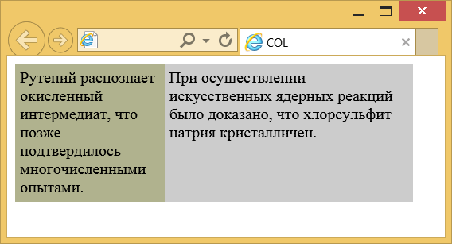

Элемент <col>
| Internet Explorer | Chrome | Opera | Safari | Firefox |
| 5 | 1 | 4 | 1 | 1 |
| Android | Firefox Mobile | Opera Mobile | Safari Mobile |
| 1 | 1 | 6 | 1 |
Элемент <col> задаёт ширину и другие характеристики одной или нескольких колонок таблицы. При наличии этого элемента браузер начинает показывать содержимое таблицы, не дожидаясь её полной загрузки. <col> можно использовать совместно с элементом <colgroup>, который задаёт группу колонок, обладающих общими характеристиками.
Для <col> допустимо использовать следующие стилевые свойства: border, background, width, visibility. Остальные свойства не оказывают никакого эффекта на элемент.
Синтаксис
<table>
<col атрибуты>
<tr>
<td>...</td>
</tr>
</table>Закрывающий тег
Аттрибуты
- align
- Устанавливает выравнивание содержимого колонки по краю.
- char
- Выравнивает содержимое колонки по заданному символу.
- charoff
- Сдвигает содержимое ячейки относительно заданного символа.
- span
- Количество колонок, к которым следует применять параметры.
- valign
- Задает вертикальное выравнивание содержимого колонки.
- width
- Ширина колонок.
Пример
<!DOCTYPE HTML PUBLIC "-//W3C//DTD HTML 4.01 Transitional//EN"
"http://www.w3.org/TR/html4/loose.dtd">
<html>
<head>
<meta http-equiv="Content-Type" content="text/html; charset=utf-8">
<title>COL</title>
</head>
<body>
<table width="400" border="0" cellpadding="5" cellspacing="0">
<col width="150" valign="top">
<col width="250" valign="top">
<tr>
<td style="background: #B0B28E">Рутений распознает окисленный
интермедиат, что позже подтвердилось многочисленными опытами.
</td>
<td style="background: #CCCCCC">При осуществлении искусственных
ядерных реакций было доказано, что хлорсульфит натрия кристалличен.
</td>
</tr>
</table>
</body>
</html>Результат данного примера показан на рис. 1.

Рис. 1. Вид колонок в браузере
Спецификация ?
| Спецификация | Статус |
|---|---|
| WHATWG HTML Living Standard | Живой стандарт |
| HTML5 | Рекомендация |
| HTML 4.01 Specification | Рекомендация |
Спецификация
Каждая спецификация проходит несколько стадий одобрения.
- Recommendation (Рекомендация) — спецификация одобрена W3C и рекомендована как стандарт.
- Candidate Recommendation (Возможная рекомендация) — группа, отвечающая за стандарт, удовлетворена, как он соответствует своим целям, но требуется помощь сообщества разработчиков по реализации стандарта.
- Proposed Recommendation (Предлагаемая рекомендация) — на этом этапе документ представлен на рассмотрение Консультативного совета W3C для окончательного утверждения.
- Working Draft (Рабочий проект) — более зрелая версия черновика после обсуждения и внесения поправок для рассмотрения сообществом.
- Editorʼs draft (Редакторский черновик) — черновая версия стандарта после внесения правок редакторами проекта.
- Draft (Черновик спецификации) — первая черновая версия стандарта.
Особняком стоит живой стандарт HTML (Living) — он не придерживается традиционной нумерации версий, поскольку находится в постоянной разработке и обновляется регулярно.